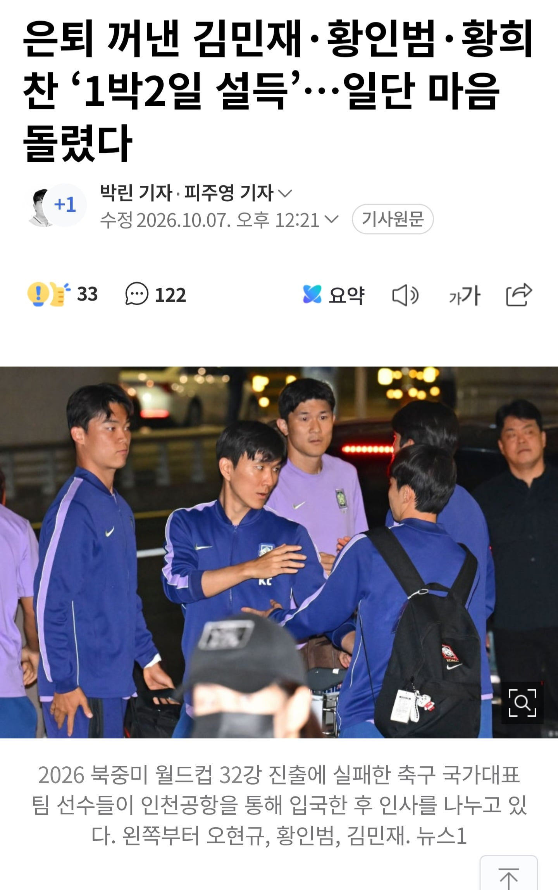

어제 경기끝나고 우는 황인범

국가가 부르는데 하고 말고 할꺼면 걍 은퇴시키는게
맞는거같은데 억지로 대리고 있어봐야 또 지들 맘에 안드는
일생기면 분위기만 흐릴꺼같다
국대가 간절한 선수도 많은데 굳이 계속 대리고 가야되나 싶음
어제 경기끝나고 우는 황인범

국가가 부르는데 하고 말고 할꺼면 걍 은퇴시키는게
맞는거같은데 억지로 대리고 있어봐야 또 지들 맘에 안드는
일생기면 분위기만 흐릴꺼같다
국대가 간절한 선수도 많은데 굳이 계속 대리고 가야되나 싶음
팀보다 위대한 선수는 없다
걍 나가지 왜???
팀 분위기 작살내면 보내줘야지
이제 갓 서른인데 은퇴라니 어감이 뭔가 좀 안타까운 느낌임
그냥 그만두면 되지. 뭐 어떻게든 굴러갈거고 정작 욕심나는 본인들이나 눈물나지 일반인들은 그냥 보다가 지면 졌구나 하고 채널 돌리면 끝이야. 뭐하러 잡네 마네 하고 있어 하기싫으면 안 하는게 맞지. 회사 오래 다녀보니 나간다는 사람 냅두는게 맞더라. 뭐 팀 생각해서 밥도 사주고 술도 사줘보고 했는데 결국엔 도돌이표고 본인선택이라 생각하고 냅두는게 맞더라
그럼 하지마 이쒸~!
항상 얘네가 문제일으키네
은퇴해라 제발
개인적으로 차범근이든 박지성이든 누구든 저러면 걍 보내는게 맞다고봄
월드컵 다음 시즌에 못나가도 괜찮음 예전처럼 대가리 박고 뛰어줬으면 하는 선수들만 남았으면 좋겠음 볼 좀 찬다고 경기장에서 꺼드럭 거리는 걸 왜 봐야함 막말로 그럼 음바폐나 야말 정도로 하면 몰라